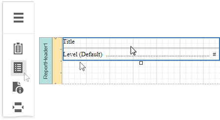

Table of Contents
Overview
Once bookmarks have been assigned to specific report elements, you can generate a table of contents that displays page numbers containing the elements included into the document map.
To implement a table of contents, drop the Table Of Contents control from the Toolbox onto the report's area. If the report does not contain a Report Header at the moment, it is created automatically so that the table of contents can be added to it.

The following image illustrates the difference in displaying information by a table of contents within a report and in a published document.

Table of Contents Structure
The table of contents contains the following elements:
A title that displays text and formatting options specified by the Level Title property.
One or more document levels that provide individual formatting settings to specific nodes of a document map's tree. To access the collection of levels, use the Levels property.
Unless levels have been added to a table of contents, a single default level is used to provide common settings to the elements of a document map for which no specific level has yet been assigned.
Refer to the Add a Table of Contents topic for a step-by-step tutorial.